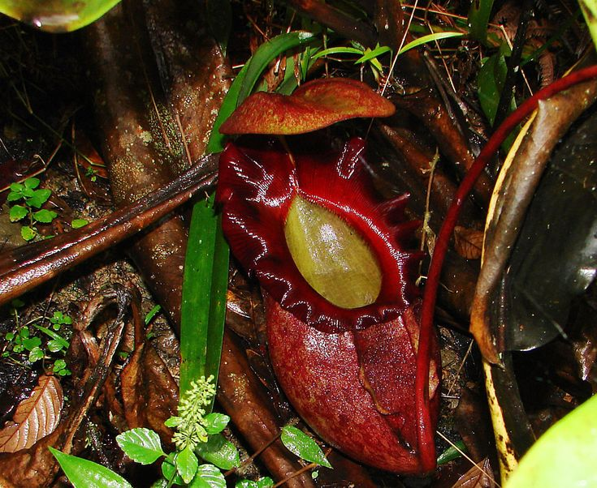

Uno de los principales cuidados que debemos tener con los árboles son nada más y nada menos que parar con la deforestación de árboles, reciclar cartón y papel, conocer y difundir la importancias de los bosques. Los cuidadados que le debemos dar a los Árboles son remover las hojas muertas o en mal estado, sacar con cuidado las ramas que se entrecruzan porque puede producir una lastimadura a las hojas del árbol y también regarla hasta que estén bien almacenadas las raíces y ponerles abono para un buen crecimiento.
Para cuidar las flores lo mejor posible debes colocarlas lejos de los sistemas de climatización a una temperatura ambiente. El aire directo las marchita al igual que la luz del sol. Busca un rincón especial alejado de corrientes de aire y luz solar directa y coloca tu arreglo floral en tu jarrón favorito.
Se debe regar la planta en profundidad es decir, que el agua llegue hasta la raíz. Es aconsejable dejar secar bien la tierra entre riego y riego. También, tomá en consideración si tu planta está en interior o exterior, ya que habrá que protegerla durante los días más fríos o lluviosos. Las suculentas necesitan mucha iluminación: podés colocar tu planta cerca de una ventana, en una galería o en una habitación con mucha luz natural.

Es importante mantener el sustrato siempre húmedo, pero no encharcado. De lo contrario, lo único que conseguiremos es que las plantas carnívoras no sobrevivan demasiado tiempo. Otro consejo para regar las plantas carnívoras correctamente es evitando el agua del grifo e incluso la embotellada.
Necesitan mucha luz, por lo que el lugar ideal es delante de la ventana. En invierno bastará con que la riegues cada dos meses y durante el verano cuando veas el sustrato seco. Es importante que haya un buen drenaje, ya que el exceso de humedad pudre la planta. Si dudas si necesita agua, no la riegues. Necesitan un tipo de tiera especial y conviene que tenga gran parte de arena.
El sutrato es la base del desarrollo de cualquier planta, acuática o terrestre. Pero además, en el caso de las plantas de acuario, es clave para su desarrollo. Una de las prioridades cuando plantamos plantas de acuario es fomentar que enraícen correctamente. Al igual que cualquier planta terrestre, las plantas de acuario necesitan luz. Es más: la iluminación es fundamental tanto para su cultivo como para su mantenimiento. Y es que, ya sea en agua o en tierra, necesitan de ella para poder hacer la fotosíntesis. Quizás el punto más delicado en los cuidados de las plantas de acuario. Y es que darle a nuestras plantas la cantidad que necesitan de CO2 implica estar muy pendientes del mantenimiento del acuario en lo que respecta a los parámetros adecuados del agua. Por increíble que parezca, las plantas de acuario también demandan abono. Pero no en cualquier momento sino, más bien, cuando se dan una suma de factores. Dicho de otro modo, solo podremos aplicar abono para plantas de acuario cuando las nuestras tengan la cantidad de luz y CO2 que demandan. De no ser así, el abono no nutriría a nuestras plantas pero sí provocaría la proliferación de algas.
Los bulbos crecen bien en una tierra suelta, ligera, con buen drenaje y rica en materia orgánica y humus. Riega a primeras horas de la mañana o al atardecer; no en las horas de más sol. No hay que mojar las flores.
Las recomendaciones para trasplantar las enredaderas o trepadoras son: Evitar el invierno, sobre todo las heladas. Antes de desenterrar la planta, humedecer la tierra. Realizar una poda importante para disminuir el ramaje y facilitar su manejo.
Limpia el jardín. Elimina restos de hojas, pétalos, semillas o flores marchitas para oxigenar la tierra. Barre las hojas, elimina las semillas y los desperdicios y ara las primeras capas de tierra. Eliminar las malas hierbas. Estas pueden acaparar los nutrientes de las especies sanas que justo vayan a florecer en esta época.Poda las plantas. La primavera es la estación idónea para podar ramas y troncos de árboles y arbustos. Corta y abona el césped. Desde marzo hasta octubre hay que cortar el césped al menos una vez a la semana para que crezca verde y reluciente.

Colócalas en un lugar iluminado de la casa. Para cuidar las plantas de interior, debes ponerlas cerca de la ventana o de un balcón. No las riegues todos los días. No eches agua a las hojas. Cámbiala de maceta si ya está grande.
¿Los árboles son celulas muertas? Curiosamente solo las hojas de los árboles, las puntas de las raíces y una fina capa de la corteza están realmente vivas. El resto, solo conforma la estructura que aporta sujeción y firmeza, la cual está compuesta por células lignificadas (madera) que van muriendo. Teniendo esto en cuenta, es más fácil entender la importancia de los trasplantes, la podas o la prevención de heridas sobre la superficie del tronco de los árboles. Los árboles son uno de los principales productures de oxígeno de la tierra. Las grietas que vemos algunas veces en los troncos de árboles nos muestran la edad que tíenen. Son controladores de tenperaturas naturales, ademas que nos brinda una sombra fantastica en días soleados de altas temperatura, de esas temperaturas es capas de reducir hasta 10°, los árboles calman las temperaturas al absorver la radiación solar. Cada uno de los árboles tienen huellas genéticas al igual que los humanos.
En el mundo existen almenos 270.000 flores. Hay cientos de miles de especies de flores variando entre sí en formas, colores, composiciones, tamaños y hábitats, convirtiéndose en el grupo de plantas más extenso que existe en el planeta tierra. De estos 270.000 solo 35.000 son tipos de rosas. Sabias que en los paises más bajos producen un 50% de las flores que se exportan al mercado mundial. "Las flores tienen su propio lenguaje", en la epoca victoriana las flores ayudaban a transmitir mensajes a las parejas, esas parejas podian dedudir de immediato que mensaje le enviaron dependiendo el color de la flor que les entregarón.
Este tipo de plantas obtuvieron su nombre porque almacenan su propio alimento por ello no es tan necesario regararlas frecuentemente. Existen alrededor de 10.000 variedades sobre las suculentas, hasta hay suculentas que son alboles muy grandes que pueden llegar a medir mas de 24 metros de altura, que mayormente se encuentran en el sur de África. Hay de muchos colores y formas. Estas pueden cambiar de color dependiendo la luz de sol que les de, tambien algunas de estas plantas son comestibles. Sabian que este tipo de plantas tienen su propio protector solar, Aunque las suculentas probienen de las regiones aridas, también soportan una helada.
Este tipo de plantas se alimentan por si solas, estas plantas tienen un liquido que a sus presas les atrae y las atrapa, aunque no tienen musculos se mueven. En tiempos de frio estas hibernan, su comportamiento es muy extraña suelen deshacerse de sus hojas para que cuando llegue la primavera rebrote con nuevas y hermosas hojas como también para sobrevivir las temperaturas que no son de su origen, pero claro esta clase de comportamiento varía dependiendo la espacie.
¿Sabias que los cactus nacieron hace 30 millones de años? Nacieron en la epoca Oligogeno, son de América, pero tambien hay otras espacies que provienen de África, Madagascar y Ceilán. Puden llegar a vivir 250 años, peor claro depende mucho de los cuidadados que reciban y la especie. Y con esos cudados si pueden llegar a vivir dos siglos y medio. Este tipo de plantas subsiten solas sin la necesidad de regarlas, usan sus espinas para tomar el agua que contienen en su interior, ademas que usan sus espinas para ello también los usan para protegerse del sol y poder mantener su temperatura normal y no deshidratarse.
Se ha visto que las plantas acuáticas juegan un papel trascendente en la conservación de los ecosistemas, aceleran la mineralización de las excretas de los animales y de la vegetación en descomposición, oxigenan el agua, ofrecen escondite para especies y además, alojan organismos microbiológicos específicos que sirven como alimento para otras especies. Estos organismos contribuyen a mantener el agua inodora e incolora, mantienen al margen o nula la proliferación de agentes microbiológicos perjudiciales que pueden ser nocivos para la biota ya establecida.
Un arbusto es una especie vegetal de tipo leñoso, es decir, que tiene sus tallos y sus ramas duras y rígidas, lignificadas, que alza su estructura no sobre un único tronco, como los árboles, sino con ramificaciones que se dividen ya desde su base a ras de suelo o incluso por debajo. Sabias que los arbustos confieren estabilidad estructural sino porque además contribuyen significativamente a mantener la alta biodiversidad de los ecosistemas semiáridos.
Un bulbo es una porción abultada y más o menos carnosa de un brote o una raíz. Para plantarlos debemos buscar el lugar más adecuado en función de la cantidad de luz que necesite el tipo de planta. Es posible cultivar bulbos tanto en una maceta con sustrato universal, como en la tierra directamente. No se olviden de esponjarla adecuadamente.

Las enredaderas son plantas trepadoras que se caracterizan por presentar un tallo largo y voluble. Éste tiene la misión principal de “enredarse” y trepar por diferentes superficies, ya sean postes, paredes o pérgolas. En definitiva, es una planta que necesita una guía para trepar.
Las herbáceas, comúnmente llamadas hierbas, son sin duda el tipo de planta más extendido en el mundo. Esto se debe sobre todo a su gran capacidad de crecimiento y de germinación, además de su alta adaptabilidad y resistencia. Si quieres saber más acerca de este tipo de plantas, acompáñanos a lo largo de este artículo de EcologíaVerde, en el cual veremos qué son las plantas herbáceas, sus características y ejemplos de sus distintos tipos.